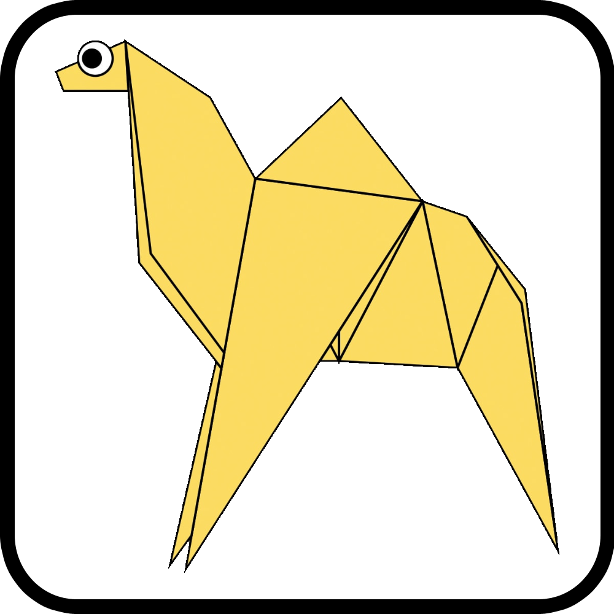

Dipayan Dutta

Camel Origami
Interesting Facts about Camel
1. Camels have thick lips which let them forage for thorny plants other animals can't eat.
2. Camels can move easily across the sand due to its specially designed feet.
3. Camels have three sets of eyelids and two rows of eyelashes to keep sand out of their eyes.

Chamelion Origami
Interesting Facts about Chamelion
1. They mainly change color in order to communicate or regulate body temperature.
2. Unilke many lizrds, chamelion can't regrow their tails.
3. Their tongue is very long to catch their prey.